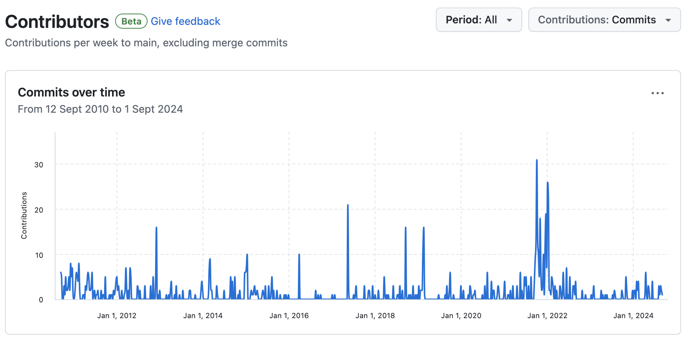
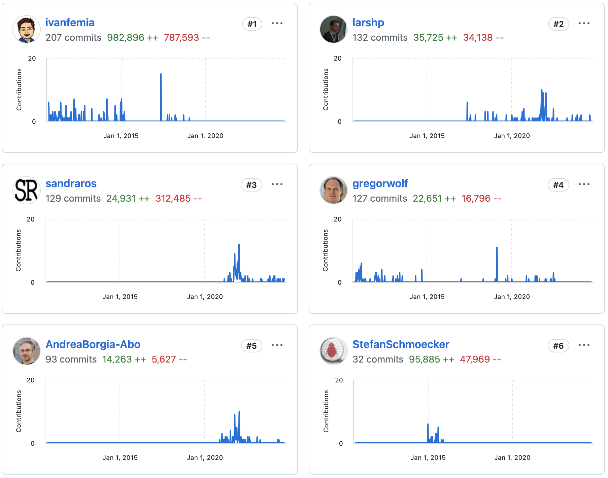

abap2xlsx
Excel in ABAP erzeugen und lesen
Gregor Wolf
Themen
- Motivation
- Historie
- Installation
- Grundkonzept
- Demo Programme
- Anwendungsbeispiele
Motivation
- Die Anwender*innen lieben Excel
- Läuft auf dem Applikationsserver auch im ohne SAP GUI
- Keine Probleme mit Encoding
- Automatische Lokalisierung für Zahlen und Datumswerte
Historie
- Initialer Blog Post von Ivan Femia 2010-07-12
- SAP Code Exchange (Hosting von OpenSource Projekten im SAP Developer Network)
- Umzug auf GitHub
- Top Beitragende: Sandra Rossi
- Ca. 45.000 Zeilen Code im Hauptprojet
- Ca. 15.000 Zeilen Code in den Demos
Commits seit 2010

Beitragende

Installation
Grundkonzept
ABAP OO Instanzen die das Excel Dokument repräsentieren können durch ABAP Code oder einlesen eines XLSX Dokuments erzeugt werden
- Arbeitsmappe = Workbook = zcl_excel
- Arbeitsblatt = Worksheet = zcl_excel_worksheet
Reader
- Excel 2007 (XLSX)
- Excel 2007 mit Makros (XLSM)
- zcl_excel_reader_huge_file - Weniger Funktionen aber größere Dateien
Writer
- CSV
- Excel 2007 (XLSX)
- Excel 2007 mit Makros (XLSM)
- zcl_excel_writer_huge_file - Weniger Funktionen aber größere Dateien
Demo Programme
- Im eigenständigen Git Repository abap2xlsx/demos
- ZABAP2XLSX_DEMO_SHOW - Demos einzeln ausführen
- ZDEMO_EXCEL - Alle Demos auf einmal ausführen
Anwendungsbeispiele
- Excel Down-/Upload von Tabelleninhalten
- Geschäftspartnerpflege
- Von Stefan Schmöcker ab Seite 32
Demonstration
- ZABAP2XLSX_DEMO_SHOW
- ZDEMO_EXCEL
- Excel Down-/Upload zur Tabellenpflege
- abap2xlsx-web
Kontakt
Gregor Wolf,
Computerservice Wolf
gregor@computerservice-wolf.com
@gregorw@chaos.social
| Visitenkarte | |||
|---|---|---|---|

|